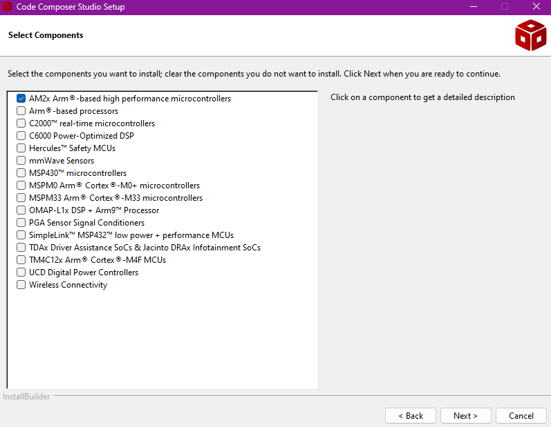
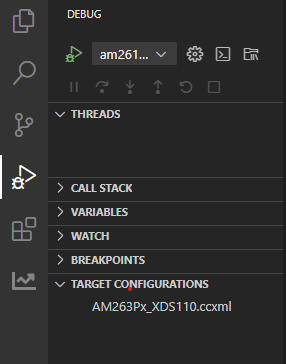
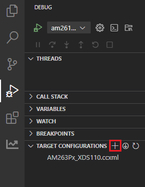
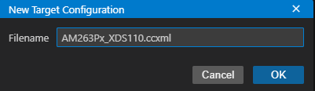
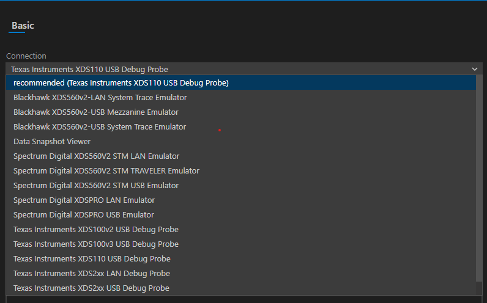
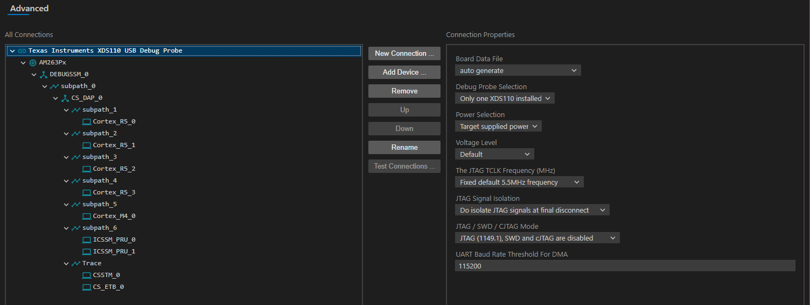
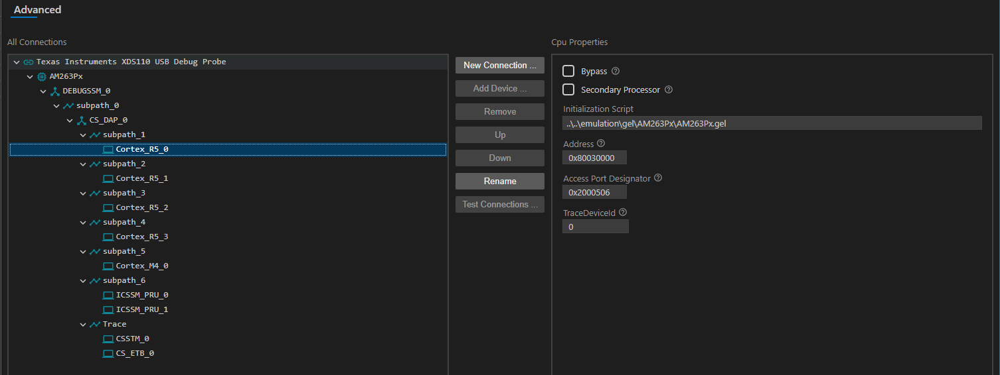

- Note
- The steps on this page need to be done once on a given host machine
-
The screenshots shown are for AM263PX but can be similarly used for AM263X.
Download CCS
Install CCS
- Install CCS 20.3.0 by double clicking the installer file from the downloaded and un-zipped CCS package file.

CCS Installer File
- Follow the steps and at below screen, recommend to keep install directory as default.
- Follow the steps and at below screen, select the component as "AM2x Arm based high performance microcontrollers" to install AM263X related emulation and GELs

CCS Select Components
- Follow the steps, until CCS is installed.
- If using Linux, additionally go through the instructions given at CCS Linux Host Support
Check Packages as seen by CCS
- Launch CCS
- Goto "File > Preferences > Code Composer Studio Settings"
- Goto "Code Composer Studio > Products", make sure you see SysConfig 1.25.0 listed here.
- Goto "Code Composer Studio > Build > Compilers", make sure you see TI CLANG 4.0.3.LTS listed here
Create Target Configuration
AM263X-CC / AM263X-LP
- Goto "Debug > Target Configurations"

Target Configuration Menu
- Create a new target configuration using the + button

New Target Configuration
- Give a nice name to the new target configuration, typically {soc name}_{JTAG type}

Target Configuration Name
- Select connection as XDS110 USB Debug Probe

Select JTAG Connection
- In "Board or Device" type "AM263X" and select "AM263x"
- For CCs using ISO7221ADR (U53) for JTAG, lower the TCLK to 1MHz. Under Advanced tab, in the Connection Properties
- Select 'The JTAG TCLK Frequency (MHz)' as "Fixed with user specified value"
- Select '–Enter a value from 100.0kHz to 5.5MHz' as "1MHz"

Configuring JTAG TCLK frequency
- Under Advanced tab – Select Cortex_R5_0
- Make sure the device csp gel file path is in the Initialization script field

Initialization script
- Click "Save" to save the newly created target configuration.
- Now you can move on to EVM Setup to prepare your EVM for running programs.
Known Issues
Using CCS debugger in Linux
- To use the debugger correctly with CCS in Linux, some additional steps are required. There is a message which is shown during the CCS installation to do this, but more often than not this is missed. If you miss this, you might get an error similar to
CS_DAP_0: Error initializing emulator: (Error -260 @ 0x0) An attempt to connect to the XDS110 failed. The cause may be one or more of: no XDS110 is connected,
invalid firmware update, invalid XDS110 serial number, or faulty USB cable. The firmware and serial number may be updated using the xdsdfu utility found in the
.../ccs_base/common/uscif/xds110 directory of your installation. View the XDS110SupportReadMe.pdf file there for instructions. (Emulation package 9.4.0.00129)
- There might be EVM specific issues in which the debugger maybe needs to be connected after the power is turned ON, or other similar issues. For this refer the evm specific setup page at EVM Setup
Building projects in CCS in MAC machines
- While building imported projects in CCS in MAC machines you might face an error like this related to missing cryptography python module:
from cryptography.hazmat.bindings._rust import openssl as rust_openssl
ImportError: dlopen(/Users/Library/Python/3.9/lib/python/site-packages/_cffi_backend.cpython-39-darwin.so, 0x0002): tried: '/Users/Library/Python/3.9/lib/python/site-packages/_cffi_backend.cpython-39-darwin.so' (mach-o file, but is an incompatible architecture (have 'arm64', need 'x86_64')), '/System/Volumes/Preboot/Cryptexes/OS/Users/Library/Python/3.9/lib/python/site-packages/_cffi_backend.cpython-39-darwin.so' (no such file), '/Users/Library/Python/3.9/lib/python/site-packages/_cffi_backend.cpython-39-darwin.so' (mach-o file, but is an incompatible architecture (have 'arm64', need 'x86_64'))
Workaround 1 - Using python virtual environment
- Use the instruction on this page to Create a Virtual Environment on your machine.
- After activating the virtual environment, pip install all required packages by typing
(.venv)$ python3 -m pip install -r {SDK_PATH}/requirements.txt
- Now launch CCS from this venv terminal by
(.venv)$ open {PATH_TO_CCS_DIR}/ccs/eclipse/Ccsstudio.app
- Rebuilding the project should be successful now.
Workaround 2 - Modifying CCS Makefile
- Line
PYTHON=python3 in the makefile_ccs_bootimage_gen file of your project always defaults to the python present in your /usr/bin folder which might be an outdated python version incompatible with required packages.
- Update the python path in the file to point to your custom installed latest python. For example,
ifeq ($(OS), Windows_NT)
PYTHON=python
else
PYTHON=/opt/homebrew/bin/python3
endif
- Rebuild the project.
Workaround 3 - Use CLI Makefile Build
 1.8.20
1.8.20